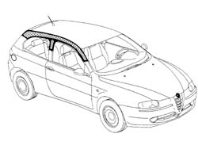
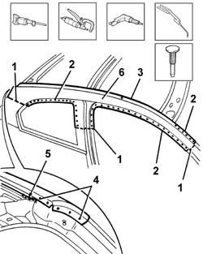
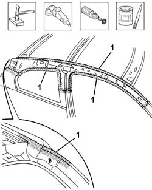
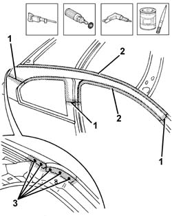
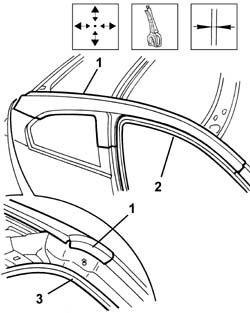
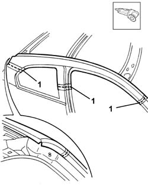
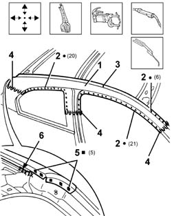
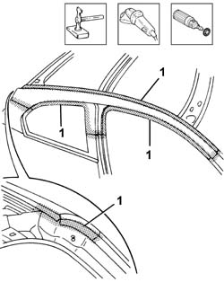
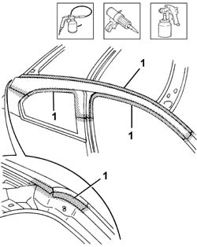

7210E34 R.R. ROOF/SIDE PANEL - MOULDING CONNECTOR PROFILE
- Path
- Procedures > 72 PANELS AND FRAME > 7210 REMOVING REFITTING > 7210E external parts > 7210E34 R.R. ROOF/SIDE PANEL - MOULDING CONNECTOR PROFILE
- Kind
- repair procedure (removal / refitting; the operation number is the code)
- Applies to
- all engines; all production periods
- Interactive page
- https://sloeber94.github.io/elrnDB-a147/en/#/3025974
Applies to: all engines; all production periods
 Removing
Removing
 Refitting
RefittingCheck if any of the connected parts are deformed by checking body alignment dimensions. Use appropriate measurement tools (reference rigs, templates or gauges).
Straighten the body if necessary.

Applies to: all engines; all production periods
1. Use a hacksawing machine to follow the cutting lines shown in the figure.
2. Use a chamfering machine to remove the weld spots shown.
3. Use a chamfering machine to remove the weld spots left after removing the roof panel.
4. Drill out the spot welds indicated.
5. Use an oxyacetylene torch and steel brush to remove the braze welding.
Use a chisel and mallet to remove spots drilled previously.
6. Remove the connecting section.

Applies to: all engines; all production periods
Straighten the panel edges using a hammer and profiled stake.
Use a grinding wheel to remove the weld spot residues.
Use a rotary brush to clean treated areas.
1. Apply the electric weld paint finish.

Applies to: all engines; all production periods
1. Cut the part at the bench. Take care to leave a sufficiently wide section of steel to attach the new part.
2. Use a grinding wheel to remove the corrosion-proofing from around the inner and outer edge of the parts.
3. Drill out the holes indicated.
Apply electric weld paint finish to the edges to be welded.

Applies to: all engines; all production periods
Refitting
Removing1. Position the part correctly on the car using self-locking grippers.
2. Fit the door compartment seal, striker and front door.
3. Fit the tail-gate seal and tail-gate.
Check the alignment and surrounding gaps.

Applies to: all engines; all production periods
1. Use a circular saw to cut both panel sections in order to achieve a perfect joint line.
Remove any excess sheet steel and adjustment components from the part.

Applies to: all engines; all production periods
1. Fit the part correctly on the car using self-locking grippers.
2. Use a spot welder to weld the areas shown in the figure.
3. Use a spot welder to made a few spot welds: the part will be fully welded when the roof panel is fitted.
4. Use a MIG welder to seam weld the joint lines.
5. Use a MIG welder to fill the holes made previously.
6. Use an oxyacetylene torch to hard-solder the area shown.

Applies to: all engines; all production periods
Correct any deformations in the panel using a profiled stake and mallet.
1. Use a grinding wheel to level the welds.
Use a rotary brush to clean the newly-welded areas.

Applies to: all engines; all production periods
1. Apply rust-proofing to newly-welded areas.
Seal the joint lines between the part and the car.

Applies to: all engines; all production periods
Apply paint.